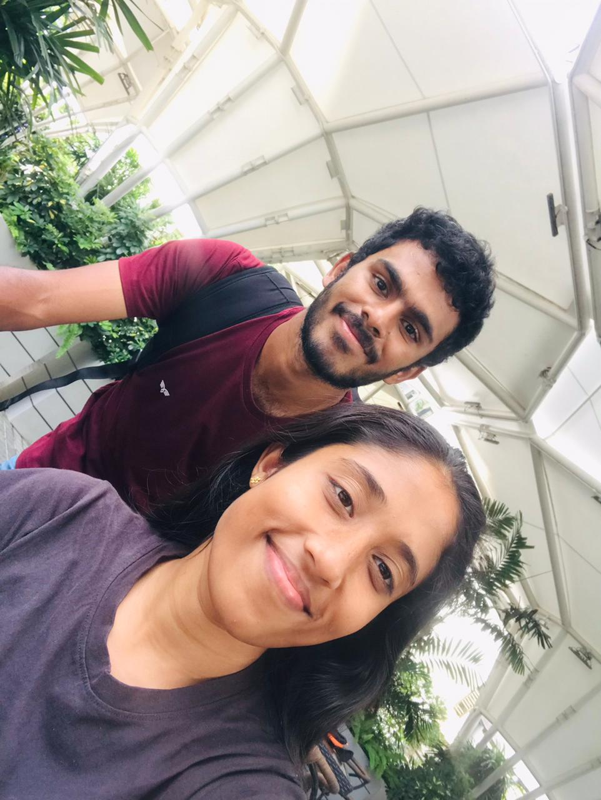
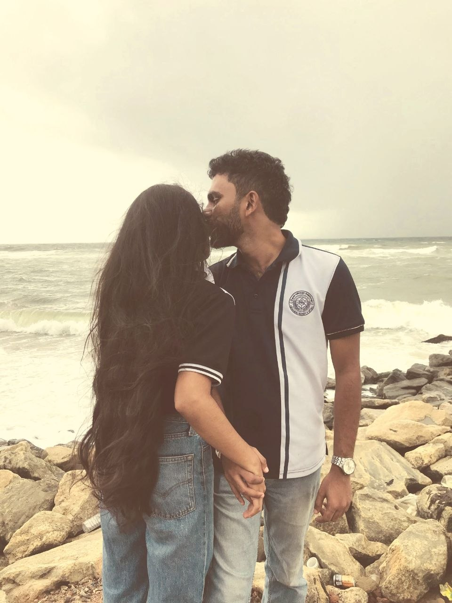
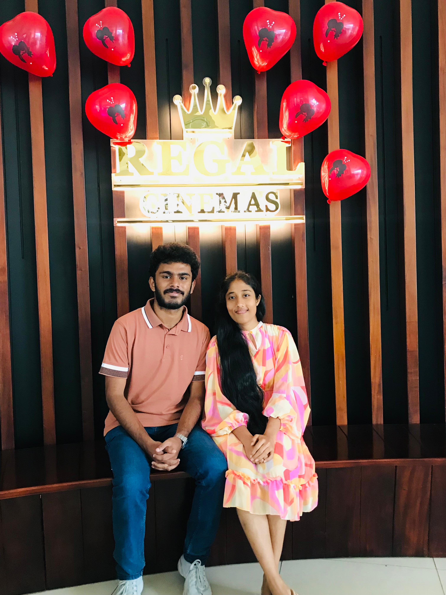
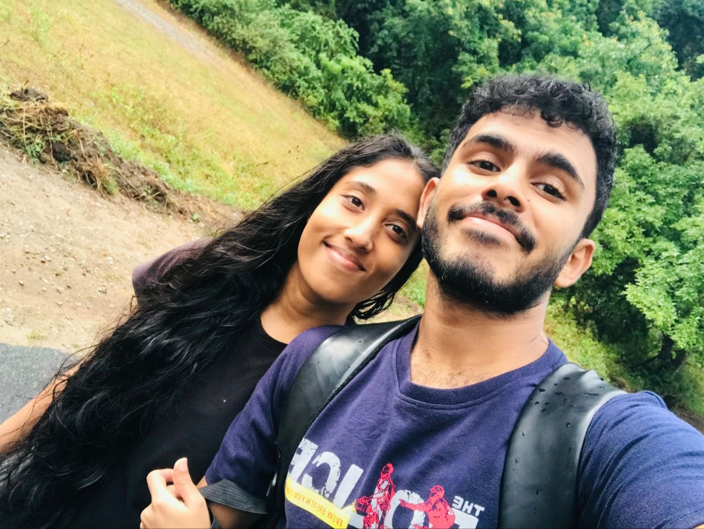
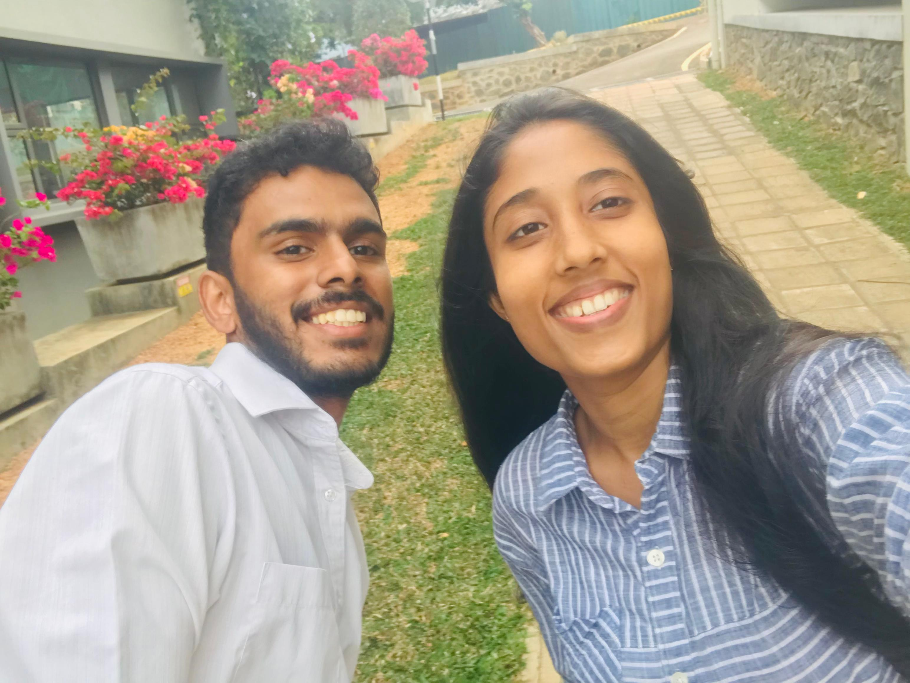

a small letter, for a big feeling
My dearest, Oshi
I don't know exactly how to fold something as big as this into words, but I wanted to try anyway — because you deserve to hear it, not just feel it.
Some days you are the reason my ordinary hours turn golden. A grocery run, a boring commute, a rainy Tuesday — you have this quiet way of making even the smallest moments feel like something worth keeping. I notice it every time. I don't think you know how often.

Thank you for the patience you hand me on the days I'm difficult to love, and for laughing with me on the days I'm just difficult. Thank you for being the safest place I know — softer than any bed, steadier than any plan.

I keep a small, private list in my head of things I love about you, and it keeps growing at the most inconvenient times — in meetings, in traffic, at 2am when I should be asleep. Today's addition: the way you say my name when you're about to tease me.

I'm not writing this to be perfect or poetic. I'm writing it because I wanted you to have proof, something you can come back to on an ordinary day, that says: someone out there thinks about you far more than you'd guess, and counts himself lucky for it.

So here's my small promise, folded into this small letter: I will keep choosing you on the easy days and the hard ones, keep learning you like a favorite book I never tire of rereading, and keep making sure you never have to wonder how I feel.

Yours, entirely and without hesitation,